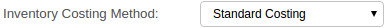
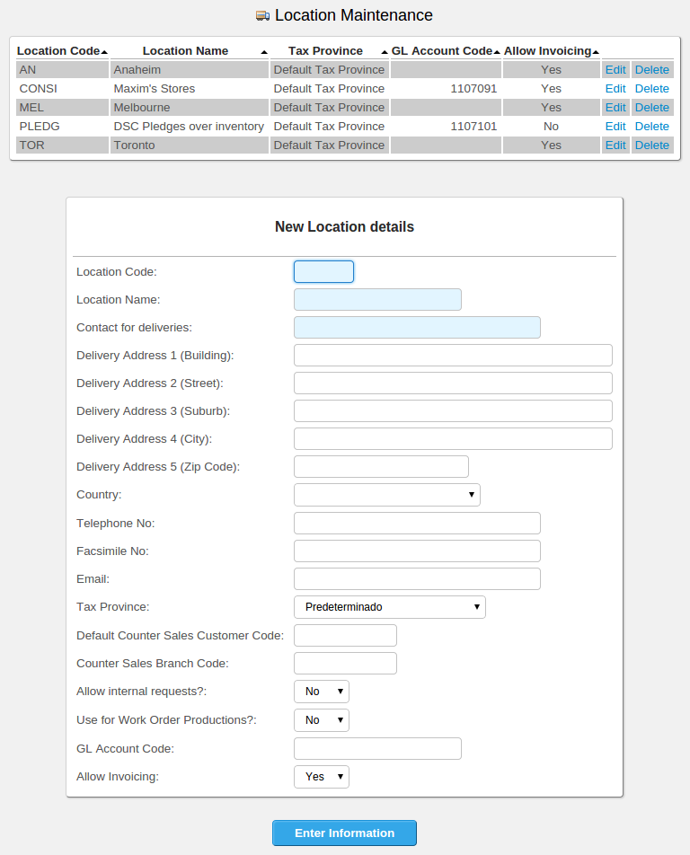
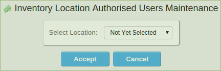

Overview
In many cases due to the English background of the developer, Inventory is referred to as "stock", which can be confusing to some. The word "stock" is used interchangeably with "inventory" throughout.
Inventories fall into clear categories particular to the business. For example a toy factory might have categories for lego, rideons, board games etc . These are referred to as stock categories and are expected to be defined by the business. The name of the category (but not its code) can be altered at any time.
Note: Integration to the general ledger is at the stock category level. The posting to the general ledger is determined by reference to the stock category of the item together with the sales area and the sales type. Separate tables of general ledger codes for sales and cost of sales are maintained from the System Setup tab of the main menu.
Inventory invoiced using the invoicing option will decrease the stock on hand from the stock location specified in the invoice. Inventory credited using the credit note creation option will increase the stock held at the location selected in the credit note. Inventory adjustments to the quantity held are also possible and transfers between stock locations.
A record of each stock movement is maintained, stock movements originating from sales invoices, purchase orders received, stock adjustments, sales credit notes can all be viewed using the inquiry of stock movements. Summing the stock movements provides an easy mechanism to see the historical usage and an inquiry is also available to show usage by month.
Inventories can be valued at either standard cost (manually maintained costs) or weighted average cost (automatically maintained). If general ledger stock integration is active, general ledger postings are created for stock adjustments, standard cost amendments, cost of sales and stock movements on invoicing and crediting. When stock journals are used, provided that the balance of the stock accounts agrees to the current valuation of the stock at the time when the flag is set in the company preferences page, then the value of stock held will be maintained in the general ledger, with a full trail of general ledger journals for each stock movement. This does make for a busy, but informative general ledger in a high use environment!
Note: Inventory journals are optional. The sales ledger/accounts receivable interface is separate to the stock general ledger interface so it is possible to have sales posting to the general ledger but not the inventory and cost of sales aspect.
Inventory System Features
- Multiple warehouses, stock quantities maintained for an unlimited number of locations.
- Prices for a stock item can be set for each sales type defined in any (and all) currency (ies) allowing great pricing flexibility.
- Automatic back ordering. Sales orders yet to be delivered can be automatically back ordered at the time of invoicing or the balance of the order cancelled as appropriate.
- History of stock movements maintained by stock item.
- Allows Dummy stock items which can be invoiced, priced, costed but with no stock record maintained for items such as labour or services.
- Kit-set parts can be defined. An order for a kit-set part explodes into the components defined for the parts at the predefined quantities as extended by the number of the kit set item ordered. These component quantities are then available on the order for modification by the user.
- Assembly parts can be defined in a similar way to kit sets. These parts exist only for ordering, invoicing and sales analysis. No stock balance is maintained, instead the quantities of the components are updated in proportion to the quantity defined in the assembly.
- Each inventory category can have an unlimited number of properties. Each item of that category can then record its value for each property. Like additional fields depending on the type of inventory.
- Inventory can be set to serialised - where each item of inventory requires its own serial number.
- Inventory can be set to batch controlled - where each batch/lot of inventory of an item must refer to a batch or lot reference
- Invoice and credit note inquiries are inked to stock movements so the detail of items sold on an invoice can be queried.
- Standard cost maintained and valuation reports
- Inventory usage by month inquiry by location and overall
- Inventory planning report
- Integration with purchasing, accounts payable, accounts receivable and general ledger.
- Any number of custom fields can be added specific to each inventory category
- Internal stock requests with departmental authorisation
- Users can be allowed access to only certain locations and will be unable to process transactions to locations where they are not authorised.
- The languages for which item descriptions are to be maintained can be configured. Invoices and credit notes can be produced in the language preferred by the customer
Inventory Categories
All items must refer to a single inventory category. Inventory categories are defined from:
Setup->Inventory Setup->Inventory Categories Maintenance
Their purpose is to group like items together and define key information once that refers to all items of the category - to maximise the efficiency of the data storage and to minimise the inputs required. The inventory category has the following fields:
- Category code - up to 6 characters
- Description of the category - up to 20 characters
- The stock type - whether the category relates to service items, finished goods items or raw material items
- The general ledger code for the cost of stock of this category - each category can be maintained in a separate general ledger account if required - this of course is only useful if inventory is linked to the general ledger in the company preferences
- The general ledger code where the cost of stock adjustments - both quantity and cost adjustments - are posted for all items of this category
- The general ledger code where price variances are posted to. Price variances are the differences between purchase cost of items and the inventory cost of an item of the category
- The general ledger code where material usage variances are posted to. These are the difference between what the bill of material expected the material cost of the item to be compared to the actual issued cost of materials. Material usage variances are realised and posted when manufacturing work orders are closed.
- The general ledger code where work in progress for the items of this category are coded to. This account is used only in manufacturing when there is a work order for an item of this category
The category then determines how inventory transactions are posted to the general ledger - all items in the same category are posted the same way.
In addition to the fields above, any number of "properties" can be defined for an inventory category. These can be considered like user defined fields for items setup to be part of the category. e.g. In the demo data we have a category for air-conditioners - we are interested in maintaining certain additional information about air conditioners such as:
- Output cooling
- Output heating
- Noise dB inside unit
- etc .....
These fields are not relavent to other inventory categories. When category properties are defined - there are options to define the inputs of the fields - they can be simply a text box, a check box or a combo box with the values pre-defined as a comma separated list. When a user comes to define an item these new fields (properties) will display on the item entry page.
To enter new properties for a specific inventory category it is necessary to click on edit for the category - the new properties form will show below the usual information relevant to the category.
Adding Inventory Items
Entry of new items requires the input of certain base information:
- Base information about the Code and description together with the category and item type.
- Cost information
- Supplier purchasing data
- Selling prices
Item Code
A stock code is required for each stock item, this can be any combination of characters up to 20 characters long. The coding structure of stock items should be considered, to ensure that like stock items appear together. Internally the system looks at the code to order stock items in the various look up tables. A systematic approach to naming stock items can save a lot of time later. However, good facilities are available to search. Under supplier purchasing data it is also possible to record the supplier's part number against an item.
There is a script that allows for stock codes to be modified retrospectively, the script goes through all the tables necessary, location stocks, bills of material, order details, purchase order details, sales analysis etc to ensure that all history for the new part code follows the change. The script together with all utility scripts is available from Z_index.php (there are no links to this utility menu - due to the dangerous nature of some of the utilities) The stock code change script itself is named, Z_ChangeStockCode.php.
Part Descriptions
A description of the stock item - can be up to 50 characters long. A description is required for each stock item. This description is used in the look up boxes provided each time the stock item is invoiced, credited or adjusted. There is also the facility to enter long descriptions for each part which show on the screens that customers could access to place orders. This field allows very long descriptions or even features and benefits to be described for the item. The intention for this field is that it could be used for producing a company catalogue or for online ordering by customers who may need more information about a product. It is only the description (short) that displays on invoices and credit notes.
The description translations can be maintained within the same parameters above. The translations that can be maintained are set in the system configuration screen. Any number of translations can be maintained. These translations are used to print on customer invoices if the customer is set up to use one of the languages for which translations are maintained. If not translation is available then the fall back is to the default description.
Image File
Picture files of items can be uploaded to the server. The system will check that files uploaded are less than defined maxum size (in KB) before they will be allowed to be uploaded. Large pictures will make the system slow and will be difficult to view in the stock maintenance screen.
Maximum Size in KB of uploaded images are defined by system administrators in Main Menu > Setup > General Setup Options > System Parameters > General Settings.
Category
These categories need to be set up first - from the System Setup tab of the menu. In selecting the stock category, be aware that the system uses the category information for analysis and summary reporting as well as identifying accounts for standard cost general ledger integration, if this option is enabled. There is a link to create new stock categories from the stock item entry page.
A stock category is required for all stock items. The stock category is a text field which groups like stock items together. In selecting stock it is often useful to restrict the search to just the category required. A stock category select box shows on the Select Product screen for this purpose.
Economic Order Quantity
This is the quantity that new orders are made or purchased in by default. Currently this is purely for memorandum - in future this will be a critical part of the MRP calculations.
Packaged Volume
Also called the gross volume. This field is required for freight calculations. It records the volume of the one of the item as packaged for dispatch. The freight calculation takes the higher of the freight costs based on the total weight of the order and the total volume of the order. Most freight companies use a conversion and charge the higher of the two. See the section on freight calculations.
Packaged Weight
Also called the gross weight. This field is required for freight calculations. It records the weight of the one of the item as packaged for dispatch. The freight calculation takes the higher of the freight costs based on the total weight of the order and the total volume of the order. Most freight companies use a conversion and charge the higher of the two. See the section on freight calculations.
Net Weight
The weight of the one of the item without the weight of its packaging.
Units of Measure
This field describes how the stock is to be maintained and is self-explanatory. It is a compulsory field, and as such, some values are defined at the time of installation. System administrators may define additional values or modify existing ones via the 'Units of Measure' link found under 'Inventory Setup' on the main 'Setup' page.
The selection list is maintained in config.php as an array variable. To add or delete other units of measurement the array variable called $InventoryUnits defined in config.php must be edited by the system administrator.
Make Or Buy
This field is compulsory and indicates whether the stock item is:
Manufactured - if the item is defined as manufactured it can have a bill of material - there are no traps that prevent a manufactured item from being purchased.
Purchased from an external supplier. Since the item is purchased it cannot also be manufactured and have a bill of material.
An assembly of other stock items. An assembly item does not have a physical stock holding itself, nor has it a cost. An invoice for an assembly item creates the stock movements for all the components of the item and the stock of each of the components in proportion to the requirements specified in the bill of material are decremented. The cost of sales entries in the general ledger journals created by an invoice (if the link is active) is created at the sum of the costs of all the items in the bill of material for the assembly as at the time of invoicing.
A kit set of other stock items that should be exploded into its components when ordered. A kit set is not a physical item itself it is just a short cut to entering a number of parts onto an order. Unlike an assembly, the kit set part does not appear on invoices or orders, but "explodes" into its component parts for modification. It follows that kit sets do not have any cost or physical stock quantities associated with them.
A service item that has no physical stock associated with it. This if for use with service companies that are not interested in retaining stock quantities by location. However, the same sales analysis and movement history is retained - showing the amounts of the service sold/credited.
This field is relevant for MRP and production scheduling. This field can also be set to Service Inventory Item - which then disables stock quantity tracking at the locations and in total. Service stock items are used for invoicing services and labour or even physical items which do not require tracking. The stock movement records are still created and are available to recall on invoicing and credit note inquiries. Inventory adjustments are not allowed for Service Inventory Items. Assembly items can have sales analysis records created for them, but no stock quantity is maintained and stock movement records are created for the components. Assemblies would normally be used where the warehouse keeps the components of the item for several different purposes and only assembles the items as they are picked for dispatch.
Setting Up Assembly Items
Using the example of toilet suites, where the business wishes to keep track of how many sold - i.e. The sales analysis - but only wishes to track the quantities of stock held of the toilet pans and toilet cisterns that make up the suite.
The business will never want to hold stock of made up suites, when stock is counted only cisterns and pans are counted not suites. If there are any made up suites these would need to be broken down into their components and the components included in the stock counts.
Such parts are called "Assembly" items by the system.
When an assembly item is invoiced, the stock of the components of the assembly are decreased by the quantity in its bill of material multiplied the number of the assembly item sold.
eg. A suite that has 2 screws in it to screw the pan to the floor might have a bill of material:
- 1 x cistern
- 1 x White S trap pan
- 2 x Pan screws
- 1 x pan pac carton
If the sale was for 10 of these - the stock of the cistern, pan and pan-pac cartons would be reduced by 10 and the stock of the pan screws would be reduced by 20. The stock movement inquiry shows this movement and the reference to the assembly item that it came from and the invoice number it was sent out on.
It is important to remember that when an assembly item is credited this process happens in reverse - stock is booked back into the components in exactly the same way as it is invoiced out. The credit note must be entered against the correct stocking location otherwise the pan and cistern stocks in the location where the stock did get returned to and the location where the credit note was entered to will be wrong. There is facility to write the stock off at the time of credit note entry also - in this case the stock location is not important.
This next point is a little confusing. The system also shows the movement of assembly items in the movement inquiry for the assembly item itself. This does have the advantage of showing to whom the assembly items have been sold at a glance. However, there are no stock status inquiries for assembly items since they are not stocking items (only the components are held and picked to make up the assembly item at the time of dispatch).
When parts are first set up - the description and stock category needs to be defined and it is at this point that the type of item is defined - from the heading on that screen titled - "Make, Buy, Kit, Assembly or Dummy Part". The choices are "purchased" - the default, "manufactured", "assembly", "kit-set" or "dummy".
Considering the treatment of assembly items:
If there is stock of an item as shown on the stock status screen - then it is NOT possible to convert the item to an assembly by changing this flag - the stock must first be adjusted back to nil and the corresponding component stock adjusted up. Also, if there are purchase orders for the item - it cannot be converted to an assembly. Remember the assembly part does not exist as a separate part only as an assembly of real stock items for the purposes of selling.
Having set the part to be an assembly, then the part will show an option on the "Select Item" menu to show the costed bill of material. This inquiry shows the current Bill Of Material (BOM) for the assembly together with the cost of each of the components and the total of the costs that is used in the sales analysis and general ledger postings.
Setting up an assembly part requires setting up A Bill Of Material - BOM for the item.
From the manufacturing tab of the main menu - under the Maintenance section - click the link "Bill Of Material Maintenance". The item search fields show with the option to enter either an extract from the item description or the item code. Having entered the selection click on the "Search Now" button. Not all items will show - only those items that can have a BOM - assembly items, manufactured parts and kit-sets. If the part is not defined as an assembly item - it won't show up!
Clicking the part code button will then show a screen for entering components to make up the BOM. If a BOM already exists for the item it will show the components already set up. There are two links next to each item shown in the current BOM to enable the line to be edited or deleted.
To enter a new component into the BOM for an assembly, all that is required is to select the component code from the list - the location and work centre are not used for assembly items so the default can be accepted as is. (The location specified in the sales order is used for all the assembly components stock entries.) The quantity required of the component for each assembly item is required to be entered - it defaults to 1 (and maybe 1 in most cases).
The effectivity dates - effective to and effective after (also known and engineering change control dates) are the dates between which the component is used in the assembly. If the BOM is due to change and customers have been advised that a new pan will be used in suites effective from 1 Jan 05 then the new pan could be entered as a component from that date. The existing pan effective to would have to be changed to be effective to 31 December 04. The alternative is to change all the BOMs on the day when the change is made.
Once the component fields have been entered hitting the enter information button adds the component to the BOM there and then. When the BOM is complete just navigate to the main menu of other link to the next task. Be careful not to click enter information button on the default component by mistake - the component must be selected from the list first.
Current or Obsolete
If this field is set to obsolete, this indicates that the stock item is no longer used. However, there may be a stock history on invoices and credit notes which are required. The stock item master record is therefore still required. (Deletion is not allowed while stock movements or Sales analysis records exist for the part) However, it will not appear on searches for invoicing, stock items, in addition the item will be flagged as discontinued in stock reports.
Controlled
This field denotes whether the item is to have lot control on it. Lot control is known by several terms including, batch control, bundle control, roll control. In short it allows a reference for each batch of the item to be entered at the time of delivery, transfer, stock check, invoicing etc. When booking in controlled items the batch references and the quantities in each batch must be entered. Many quality control systems that require traceability of raw materials need this functionality to establish what batch of raw material was used in a given work order. Or what roll of cloth was sold to a given customer. Other industries call their lots of product by different names a melt, a cut, a run etc. Every time a transaction involving a controlled item is created, the system will accumulate the quantity from a separate form for selecting the batches (Lot/roll/melt/work order/serial numbers).
Serialised
Serialised is a special case of controlled where the batch size is always one. The system will prompt for the serial number of each item of stock being received and stock records will be maintained for all serial numbers separately. Serialised does not have any effect if controlled is not set.
Decimal Places for display Quantity
Some items of stock require a number of decimal places to be retained and displayed, others do not require any. This field is used throughout the system for invoices, orders and all places where the item quantity is displayed.
Bar Code
This field is the unique identifying bar code for this item, typically containing the EAN bar code for the item. This field is used in identifying the item in EANCOM edi messages.
Discount Category
Is used in the discount matrix of discount categories and sales types. When an order is for an item with a discount category code and a customer of a sales type that has a discount matrix entry and the order is for a quantity more than the matrix quantity break figure, the system automatically enters the discount into the order lines for all items in that discount category. This allows quantity break discounts across a range of similar products.
The discount category is a 2 character field and there is no error checking on entries.
Tax Category
Tax categories are defined by system administrators in Main Menu > Setup > General Setup Options > Tax Category Maintenance.
Pan Size
This modifier is sometimes called the order multiple. It is the minimum packing quantity. It allows you to create planned orders in multiples of that value. This is especially useful if you are required by your suppliers to place orders in specific lot sizes. It is also a useful modifier if you have established your own production run sizes. This modifier causes MRP to inflate the required order quantity to an even increment of the pansize value. As with all modifiers you do need to be careful with this modifier as its use could lead to excess inventories.
In other words if it is most efficient to manufacture an item in batches of 10 then the pan size would be 10, and MRP would calculate demand in batches of 10, so would inflate a demand of 17 to 20. For instance, we purchase some chemical materials which is 25 kg/pack. The pansize means you have to purchase at least one pack each time.
Shrinkage Factor
Amount by which an output falls short of the estimated or planned output.
Item Properties
Review Translated Descriptions
This script shows items descriptions marked for review and allows to edit the translations.
You can review and edit the translated short description (stockdescriptiontranslations.descriptiontranslation field) and the translated long description (stockdescriptiontranslations.longdescriptiontranslation field) that have the review flag turned on (stockdescriptiontranslations.needsrevision=1).
See also: In Special Utilities, Translate Item Descriptions.
Inventory Costing
There are two schema's for costing in webERP.
- Standard Costing
- Weighted Average Costing
To choose the costing mode the System Parameter must be changed from the Main Menu -> Setup tab -> System Parameters

Standard Costing
Standard costing is used in situations where costs do vary and a middle ground standard is adopted - variances away from the standard are reported as price variances. Standard costing is particularly relevant to importers and manufacturers where exchange rate, freight and manufacturing costs and volumes vary making each item have different costs.
With standard costing - costs need to be maintained manually - where a permanent shift in an exchange rate of volumes of production dictate that the cost has permanently altered. Variances would consistently be the same direction and modification to the standard is required.
Weighted Average Costing
Weighted average costing updates costs automatically based on the quantities purchased and the cost of these but taking into account the existing quantity of the item is inventory.
The process is best described with an example - consider an item with 100 currently on hand with a value of $1 each has an influx of 10 more. When the 10 arrive and are booked into stock the system creates the goods received record for 10 at the inventory cost of $1 (the new cost is not yet known - we must wait for purchase invoices to be entered). If the general ledger is integrated to inventory, the stock account (from the stock category record) is increased by 10 units @ $1 = $10 and the goods received suspense account (from the company preferences) is credited with $10.
Now the purchase invoice is posted against the goods received record - and the items actually cost $1.50 each 10 units x $1.50 = $15 so a variance of $10 cost recorded on arrival of the good - $15 actual invoice cost = $5 is recorded. With weighted average costing (and GL integration of stock enabled) this variance is posted to the value of stock and the cost of the stock item is increased such that the $5 variance is apportioned accross the whole quantity of stock on hand - 100 already in stock plus the 10 =110 The value of $5/110 = $0.04545 is added to the existing stock value of $1 - new item cost is updated to $1.04545 as the new weighted average cost.
Similarly when shipments are closed the cost of items on the shipment are updated in the same way.
Even with weighted average costing it is still possible to update costs where there has been a significant change in the cost of an item that is required to be reflected immediately. However, in normal circumstances it should not be necessary to modify costs manually.
Manufactured and Assembly Item Costs
These items require a Bill Of Material (BOM) to be defined. All items with a bill of material have their costs updated by the system automatically (and any necessary general ledger postings are created) based on the sum of the component costs as defined in the BOM. Whilst it is also possible to update these item costs independently, any change to the BOM will over-ride modifications made and the cost will once again be the sum of all the component costs. However, changes to component costs are not automatically rolled into the cost of manufactured items at the time of a change to the component's cost, but each time a work order is created for a manufactured item the cost is rolled up and updated. Each time an assembly item is sold the cost is rolled up at the time the sale is invoiced.
Inventory Item Costs
From the menu select the inventory tab and Modify Standard Costs. The item code can be entered directly to show the current cost structure, modifications to costs in this screen are reflected in standard cost journals in the general ledger if the link is active in the Company Preferences page - (menu - System Setup tab). Alternatively, to select the stock item to modify the costs for the costing page can be called from the Select Item page - once an item has been selected - a link to the Select Item page is shown on the title bar of all pages. Maintenance and initial entry of cost data is a critical part of the system set up. Simply defining the item header is not sufficient on its own. The cost information entered here is used for both inventory valuation reports and for the general ledger integration stock journals created for the cost of sales, the cost value of stock adjustments, the value of stock received and so on. It can be omitted only if the user is not interested in the value of stock and no general ledger - stock integration is required. It will only be required to be entered on the intial set up of the system if weighted average costing option is enabled from the configuration settings then the cost will be maintained automatically from then on.
Material Cost
If the item is bought in, this field should be the average or expected cost of the item. If the item is manufactured in house, it should be the cost of externally sourced materials plus the total cost of in house manufactured components, from lower levels in the bill. In future this will link to the Bill Of Materials cost roll up. Alterations to this figure affect the value of all stocks of this item held. The system is a standard costing system. When items are purchased the actual purchase cost is compared to this figure and a variance reported to the general ledger account set up in the stock categories record applicable to the item.
Labour Cost
This field should be the total standard cost of labour included in the cost of this stock item. The labour cost is the labour applicable only to this part not to the manufacture of components at a lower level in the bill of materials. The labour cost of componentry would be included in the material cost. Alterations to this figure affect the stock value of all stock held. See comments for Material Cost. In future, this field will be altered automatically on roll ups of cost.
Overhead Cost
This field should be the total overhead to be recovered on the sale of 1 unit of the stock item. Its value affects the value of all stock held of this item, as for labour cost and material cost above. Labour cost, Material cost and Overhead cost are all added together to get the total cost standard cost of a stock item. This total is the value applied to stock valuations. In future, the cost roll up will automatically update this field based on the work centre overhead rates and the quantity of labour at each work centre.
Standard Costing Considerations
Each time a stock item is sold, the cost of sales account (specified by the COGS GL Postings table by reference to the stock category and sales area of the branch) is updated with the total of material cost, labour cost and overhead cost, and the stock value (the account specified in the stock category record) is decreased by the total standard cost.
Actual Cost
The actual cost is the last purchased cost as updated by the system on a purchase. For a manufactured item this is the actual cost as calculated including only efficiency variances (price variances are excluded)
Alterations To Labour Cost, Material Cost or Overhead Cost
Since the system only maintains the one standard cost of items, this is the cost that stocks are valued at. In altering this cost all stock held of the stock item under review will be re-valued or devalued accordingly. If stock journals are being created (the option is set in the company preferences from the System Setup tab) then a system generated journal will be created for the effect on stock value using the general ledger accounts set up for the stock category currently defined for the stock item being changed.
Only transactions entered after the charge will be created at the new cost. Sales analysis will refer to the costs as at the time when the transactions are created.
There is a utility available from the Z_index.php page that allows the sales analysis for a specified period to be updated with the current costs. This utility takes the quantity sold and multiplies the current standard cost by the quantity to re-calculate the cost of each sales analysis record in the period selected - the sales analysis data is updated. This will mean that the general ledger costs will then differ to the sales analysis cost for the period since the general ledger postings are created at the time of invoicing/crediting.
Selecting Inventory Items
From all pages in the system the main title bar has links to select from the critical tables in the system. Customers, inventory and suppliers. Clicking on the "Select Item" link takes the user directly to the inventory item selection page. In addition, from the menu, the Inventory tab has a link to "Modify or Delete an Inventory Item Or Maintain Pricing". Using either method, the select item or product page will show.
The search for a particular item can be narrowed by selection of a specific stock Category - a select box allows selection of the category. Also if some element of the code is known this can be entered, alternatively if some element of the description is known this can be entered - the description keywords are used if both a code and description fields are used. Note that the text entered into these fields does not have to be the start of the code or the description. All items with the text anywhere in either the code or the description respectively will be displayed, together with the total stock on hand and the unit of measure for the item. Assembles, kit-sets and dummy parts will all show zero stock on hand.
The maximum number of resultant items can be defined by a parameter in config.php - this limits the number of records returned so that users over a lower bandwidth connection are not penalised for making too wide a selection. Downloads of significant amounts of data over a slower dial up connection would result in serious degradation in performance. By default this is set at 100 items.
Clicking on the button of the code of the item that is required will select it and links to the options applicable to the item will be displayed.
Having selected an item it is possible to modify:
- Item master information
- Costs
- Pricing
- Reorder levels
- Purchasing data
It is also possible to inquire on:
- Inventory Movements
- Status - showing quantity on hand, on order with suppliers and on sales orders for customers by location
- Historical usage by month
- Outstanding sales orders
- Outstanding purchase orders
- Completed sales orders
- Bill of Material
Further it is possible to initiate transactions to:
- Transfer stock between locations
- Adjust stock quantities on hand.
Amending Inventory Items
The master information is available for amendment. The only field that cannot be altered on the main stock item page, is the code. The code is used in many tables throughout the system and modification of the stock code would require data in many other tables of information to make corresponding changes. A special utility is available that allows stock code changes to be made. The changes to the database are extensive and it is recommended that this facility be run out of normal operating hours since the load on the server for the changes could be substantial in a large database. See special utilities. The following points should be considered when altering data fields:
Changing a Category
The Category of a stock item can be altered at any time.
However, if the stock journals option is active (in the company preferences set up), it should be remembered that the general ledger coding set up for that category can not be amended retrospectively. In other words, general ledger journals created for invoices, credit notes and stock adjustments created using the old category general ledger codes cannot be altered. The general ledger coding could be amended with a manual journal if necessary.
Note: Sales analysis done by Inventory Category is performed with the stock categories as they were when the invoice/credit was created. Inventory Category information is stored in the sales analysis table and cannot be changed retrospectively.
Alterations to the Make or Buy Flag
A stock item that currently has stock cannot be changed to a Dummy stock item, an Assembly item or a kit set item. The system does not maintain stock quantities for these items and it is therefore inappropriate to have an initial stock quantity. The stock must be either invoiced, credited or adjusted to zero for all locations before this can be changed. Similarly, the system will only allow a Bill of Material to be set up for manufactured, assembly or kit set items. Altering a manufactured item (or assembly or kit set) which currently has a Bill Of Material to a purchased item is also disallowed, the BOM must be deleted first.
Inventory Categories
Inventory Categories are the natural groupings which apply to certain types of stock. A business will normally have several distinct categories. E. g. A manufacturing jeweller might have stock categories for gold chain, silver chain, diamonds, rubies etc.
Inventory Category Code
This is a six character text field which is the reference used internally by the system. The category code must be unique between different categories. It cannot be changed retrospectively and cannot be deleted where stock items are set up to use the category, or sales analysis records exist using the category. The category code is stored against sales analysis records for reporting. All stock items must be defined as belonging to a category and has the appropriate category code stored against it in the StockMaster table.
Inventory Category Description
This description is used in searches for stock items and in sales analysis reports to describe the category of stock referred to. Up to 20 characters of text can be entered, although on some reports less than the full description will appear.
Balance Sheet Inventory GL Account
Stock is an asset to the business - that according to GAAP should be valued at the lower of its orignal cost or what it could be sold for net of selling costs (net realisable value). To integrate stock values fully into the accounts every time stock is received it must include the value of assets in the accounts. For each category of stock it is possible to specify different asset accounts in the general ledger where the postings are made to. The selection under this field is the general ledger asset account that should record the value of stock held of this category. Put in accounting terms this is the general ledger account where system-created standard costing journals will post the balance sheet entry. It is possible to set up a GL account for each stock category or to post all raw material stock categories to a raw material general ledger account and similarly for finished goods stock categories. The select box lists all the available balance sheet accounts - profit and loss accounts will not show (because it is not appropriate to record stock values in the profit and loss account). If a new general ledger account needs to be set up this should be done first. This field will not be used if the company preferences flag for "Create GL entries for stock transactions (at standard cost)" is not enabled.
Inventory Adjustments GL Posting Account
When stock is adjusted - ie stock quantities are increased this has the effect of increasing the value of stock holdings. In an integrated system the value of the increase in stock gets posted to the "Balance Sheet Inventory GL Account". The double entry here is to reflect the value of the stock find in the profit and loss account. There is a profit made for the value of the stock found and adjusted up. The reverse applies for stock adjusted down. The entry in this field is the general ledger account - a profit an d loss account where the profit on stock finds (and loss on stock losses) is posted to. In accounting terms, this is the general ledger account where the system created standard costing journals will post the profit and loss entry to for stock adjustments. It can be different for any or all stock categories. The select box lists all available profit and loss accounts. This field will not be used if the company preferences flag for "Create GL entries for stock transactions (at standard cost)" is not enabled.
Purchase Price Variance Account
When purchase invoices are entered at a determined exchange rate for an item, the local currency cost is compared against the standard cost and the difference is taken as a profit or a loss. The difference is known as a purchase price variance. Purchase price variances must be posted to a profit and loss account. The entry in this field is the general ledger account used by accounts payable invoice entry to post variances between standard cost and the standard cost of stock items of this category. Price variances are calculated when the purchase invoice is entered, unless the purchase order item is on a shipment. Shipment purchase price variances are calculated when the shipment is closed. This field will not be used if the company preferences flag for "Create GL entries for stock transactions (at standard cost)" is not enabled.
Material Usage Variance Account
This account is used when a work order is closed and the quantity of material of this category issued to the work order is different to the requirements from the bill of materials of the item(s) being made on this work order. The difference is evaluated at the standard cost of the component item.
This general ledger account is used by the works orders to post the variances between the actual material issued to a work order and the standard requirements of the work order based on the number of finished items resulting from the work order. This field will not be used if the company preferences flag for "Create GL entries for stock transactions (at standard cost)" is not enabled.
Type of Resource
The type can be finished goods, raw materials, dummy or labour. Finished goods and labour are purely for reporting. Labour type items will alter the display of the data input form to allow selection of labour recovery accounts - these are profit and loss accounts as opposed to normal stock accounts that are balance sheet accounts.
This field declares the type of resource that the stock category represents and is one of Finished Goods, Raw Materials, Labour or Dummy Inventory. This field is used to distinguish labour type stock items from other components for the purposes of calculating work centre overhead in the cost roll up. It is also used for ordering stock reports to ensure raw materials and finished goods are grouped together.
Inventory Locations Maintenance
A table of locations is maintained which contains a location code of 5 characters and the location description (up to 20 characters).
Inventory locations are the factories or warehouses where inventory is stored. When a sales order is created the location from which the inventory is to be picked is specified. Also, when a work order is created it is created on a specific location - in this case a manufacturing facility. Every transaction involving inventory must specify the location.
To create or modify inventory locations go to the Main Menu -> Setup -> Inventory Setup tab and select Inventory Location Maintenance

The description is the field used in lookups on invoicing and crediting. To keep the database as compact as possible it is the code which is stored against stock movement transactions. As many locations as required can be set up. When a new location is defined, location records for all items in the database are created. When a location is deleted, so too are all the item location records. However, a location record cannot be deleted if there are stock movements or stock held for any part in the location.
When creating a purchase order, the inventory location that it is required for is specified. The inventory location address and contact details defined here are used as the default addresses available for delivery of goods ordered on purchase orders.
- Location Code
- Enter up to five characters for the inventory location code.
- Location Name
- The inventory location name could be either a warehouse or a factory.
- Contact for deliveries
- This field is for the name of the responsible person to contact for this inventory location.
- Telephone No
- The phone number should consist of numbers, spaces, parentheses, or the + character.
- Facsimile No
- The fax number should consist of numbers, spaces, parentheses, or the + character.
- The email address should be an email format such as adm@weberp.org.
- Tax Province
- Since the location represents the physical location from where goods/services are supplied it is important for determining the tax applicable on a sale. The governing tax authority must specified with the location record. It is used in the calculation of the applicable rate of tax in conjunction with the tax authority of the customer branch being delivered to and the tax level of the item being sold.
- Default Counter Sales Customer Code
- The counter sales functionality looks at the default inventory location for a user and when that user enters a counter sale it uses the customer account and customer branch defined against the inventory location record. Consider a business with locations in Melbourne Australia and one in Anahaim USA - it is unlikely that a user based in Anaheim would be making a counter sale in Melbourne! Each location can have a customer account (and branch) defined for it's counter sales. These customers are expected to be cash only customers as the counter sales functionality expects the cash to be taken at the time of the sale. Not a substitute for proper Point of Sale - but suitable for occassional Counter Sales.
If counter sales are being used for this location then an existing customer account code needs to be entered here. All sales created from the counter sales will be recorded against this customer account. - Counter Sales Branch Code
- If counter sales are being used for this location then an existing customer branch code for the customer account code entered above needs to be entered here. All sales created from the counter sales will be recorded against this branch.
See Default Counter Sales Customer Code. - Use for Work Order Productions?
- Some inventory locations are never going to be used as manufacturing facilities and to reduce the scope for errors it is possible to specify those inventory locations which can be used for work orders.
- Account Code
- Sometimes it is needed to have general ledger transactions of inventory transfers to or from a location. For example, a location that is used for pledged inventory or a place with goods on consignment. In this case, the location should be related to a ledger account. To do this, enter the general ledger account code for this location in this field. This account code overwrites the account codes of inventory categories when a general ledger transaction related with this location is created. Each time you do an inventory transfer from or to a location with a non blank account code, the system will generate a general ledger transaction (a SysType 16 --Location Transfer-- transaction).
If you do not need accounting entries for inventory transfers, nor locations with his own GL account, leave this field in blank. - Allow Invoicing
- This parameter is to allow or deny the invoicing of items in this location. For items on consignment, depending on the agreement, you can not sell or can sell them (if you notify the consignee). Also, for pledged items, depending on the agreement, you can not sell or can sell them (if you replace them with items with equal or greater value). For these cases, use this parameter to indicate whether these inventory locations allow or deny such transactions.
This parameters hides locations from Draw Stock From in Customer Branches and in Deliver from the warehouse at in Delivery Details.
For standard locations, leave this option in "Yes" (allow invoicing).
Note: Location codes cannot be modified retrospectively. Neither can they be deleted if there are stock movements, users (default location) or customer branch records set up to receive stock from the location.
Inventory Location Authorised Users Maintenance
With the release of 4.11.3 only users with appropriate permissions can process transactions involving a location. This requires that users are specifically given access to individual locations.
Normally to modifiy the users that have access to a location requires system administrator access.
From the Main Menu -> Inventory Setup Tab -> Inventory Location Authorised Users Maintenance

This screen allows you to select a location and see the users that are authorised to access and create transactions. You can add users are required.
Inventory Adjustments
Inventory can be written on or off for individual stock items using this option. Corrections to physical stocks and deliveries of stock can be entered using this option. Adjustments can be entered by selecting the link on the SelectProduct.php page.

Ajustments can also be created directly from the main menu under transactions. Using the second link, the item code must be known and entered, there is no facility to select an item code from this page.
If Stock GL integration is enabled from the company preferences page (under the setup tab), then the system creates the necessary journals in the general ledger to update the stock account and the profit and loss account stock adjustment account specified in the stock category record. (see Inventory Categories above and also see General Ledger Integration later)
Note: Inventory Adjustments are not possible with kit set, assembly or dummy stock items since no stock record is maintained for these items.
Inventory adjustments for controlled items must select the batches/serial numbers being adjusted.
Internal Stock Requests
Internal departments of an organisation to make requests for consumable items from a particular stock location.
Departments are created via the Inventory section of the setup module. The name of the department must be entered, and the userid of the person who will be responsible for authorising the requests from that department must be selected here.
Each user can be given permission to create internal stock requests for a particular department, or they can have permission to create requests for all departments.
Individual stock locations have a flag that can be set to allow or disallow internal stock requests to be fulfilled from that location.
Also each user role, can have specific stock categories assigned to it for which intyernal stock requests can be created. These are created in the Maintain Internal Stock Categories to User Roles section of the setup module.
-
Create a New Internal Stock Request
An internal stock request is created in two parts. Firstly the header, which contains the Department that requires the items, the location that you wish the request to be fulfilled from, the date by which you require the items, and any narrative you wish to add to the request.
Secondly the items required are selected and the quantities required are entered.
Once you are happy that you have all the items and quantities enetered, submit the request for authorisation.
-
Authorise Internal Stock Requests
When a user chooses this option they will see all unauthorised stock requests that they are allowed to authorise. No other requests will appear. By ticking the authorise checkbox, and clicking on the update button they will authorise this request to be fulfilled.
-
Fulfil Internal Stock Requests
When the warehouse open this option for their own warehouse, they will see any internal stock requests that are awaiting fulfillment. They can either fulfil all or part of a request. If not all of the request is fulfilled, but the rest will not be, the request can be marked as completed. Also a GL tag can be chosen to tag that entry against.
Inventory Location Transfers
Transfers of inventory between locations need to take stock off the sending location and increase the stock in the receiving location. This is effected in one transaction by entering a stock transfer. In the same way as adjustments these can be accessed either from the SelectProduct.php page which is linked to from every page on the top header banner or directly from the menu - inventory tab under the transactions section. All that is required is the location from and to, the date and the quantity being sent. If the business wishes to record inventory in transit an additional in transit location needs to be established and a transfer to the transit location performed when the stock is dispatched and a further location transfer from the transit location to the receiving location when the stock is received. Stock location transfers are shown on stock movement inquiries.
Note: Inventory Location Transfers are not possible with kit set, assembly or dummy stock items since no stock record is maintained for these items.
Bulk inventory transfers consisting of many parts can be set up. These allow a docket to be produced to be sent with the dispatch of the goods. The transfer is not actually effected until the transfer is received in by the receiving stock location.
Inventory Reports and Inquiries
Three types of inquiries are possible:
- Inventory Status.
- Inventory Movements.
- Inventory Usage
All stock inquiries are performed from the product selection form. Once a product has been selected the links to the various relevant inquiries will show.
Inventory Status inquiries
Shows the detail of how much stock is held and where the stock is (i.e. how much at each location) together with the total quantity of sales orders for the part outstanding and the quantity of the item on outstanding purchase orders can also be viewed from this inquiry. Not only are outstanding sales orders for this part accumulated but all the demand for parent assembly parts as extended by the quantity required per unit of the parent. This ensures that all demand for the part is shown.
This - and all stock inquiries are called from the SelectProduct.php page - this page is linked to from every page in the system from the header links "Select Item". Once an item is selected the relevant inquiry options are displayed. As with all web pages produced by the system most browsers have good facilities to print them.
If the item selected is a controlled item then the status inquiry will also show a link to show the batches. If the item is serialised, the link will refer to the serial numbers rather than batches.
Inventory Movement inquiries
Inventory movements for the item show with the most recent movements at the top of the screen in descending order of date.
This inquiry shows the movements of the stock item for a specified location with further links to the transaction detail that created the movements such as the invoice or credit note. By default only the last 3 months stock movements show but the date from which stock movements are displayed can be modified from the inquiry page.
Note: Inventory movement inquiries are possible on dummy and assembly stock items. However, since dummy items are not physical stock items, no record of the amount of stock and the location of where held (there is none held) are maintained. The location inquiry will always be zero for a dummy/assembly and kit set items. When a dummy stock item, or an assembly or kit set item is selected the link to the stock status inquiry is not available.
If the stock movement was an invoice or a credit the customer and the price in the currency invoiced or credited will show.
Inventory Usage inquiries
This inquiry shows the quantity of the stock item that has been consumed either in sales net of credit notes and adjustments by month from each location. Transfers between locations are ignored as are deliveries. Usage of an item adds all the stock movement quantities for the part so that stock movements related to the sale of assembly items requiring the part under review as a component are included. Usage can be seen by location and also the total usage from all locations.
There is a user modifiable flag which determines how many months of stock usage should be maintained for the item.
Inventory Valuation Report
This report shows the stock on hand at the time the report is run as extended at the current standard cost. Both reports show the total quantity of stock held by Location and by Inventory Category. The detail report lists the individual stock items and value of each. Inventory items with no stock on hand are not printed out. This report can be run with only a selected inventory category and location, to reconcile the stock general ledger accounts.
A separate script is included in the distribution that can be set to run the stock listing report and email it to predetermined email addresses. To take advantage of this facility, the script must be called by wget under a linux distribution from a crontab entry on the last day of each month. The script is called MailInventoryValuation.php. This script will need to be edited with the email address of the user to receive the report and any parameters necessary to run the report. By default it produces a detailed report for stock at all locations. The entry in crontab in a linux installation that would send the report at 0:0 on the first day of each month (assuming wget is installed in /usr/bin/wget and that the web server is on the same machine) would be:
# Scheduled email of monthly Inventory Valuation report
-0 0 1 * * root /usr/bin/wget http://localhost/web-erp/MailInventoryValuation.php
since the page has no output - it would be pointless running it in a web browser although it would initiate another email to the defined recipients.
Inventory Planning Report
This report shows the usage of stock items over the previous four months together with the current stock, outstanding sales orders and outstanding purchase orders. It suggests a re-order quantity based on a selectable number of months stock to have in the supply chain multiplied by the maximum of the previous four months monthly stock usage (from all stock locations), less the on hand stock and purchase orders. It will not suit all purposes but certainly does provide good information from which to base purchasing decisions.
Another inventory planning report - title Inventory Planning based on preferred suppliers uses the data in the purchasing data table specifically the data for the supplier selected as the preferred supplier for the item. The lead time in days for the item is used is divided by 30 to get the monthly lead time and this is added to the user selectable buffer stock holding period. The lead time plus the buffer stock holding period is added together to calculate the total supply chain stock holding period. This stock holding period is then multipled by the average of the last 4 months stock to get the quantity required in the supply chain. The report suggests a quantity to reorder if applicable by using the calculated quantity then deducting quantities already on order and in stock and adding outstanding sales order demand. This report shows in supplier code order then in order of the item code for each preferred supplier.
This report shows:
- The average quantity of the items for the last 4 months
- The maximum quantity sold in any of the last 4 months
- The standard deviation of the quantities sold over the last 4 months. This is meant to give a guide to the variability of demand relative to the average. If the standard deviation is 0 then it means the same amount was sold each month and the average is the same as actual sales over the last 4 months. The standard deviation is the average of differences between actual month usage over the last 4 months and the average over the 4 months and the actual quantity in future months could reasonably be expected to be (on average) the average over the 4 months +/- the standard deviation quantity.
The Inventory Planning Reports are run from the Inventory tab of the main menu under the Inquiries and Reports section.
Inventory Checks
Scripts are available to automate the stock check adjustments necessary following a stock check. However, this feature does not work with controlled items .... yet. The procedure for there use and for stock checks in general is as follows:
Step 1:
Ensure invoicing is complete for all product dispatched. Ensure that goods received are entered against purchase orders. All other goods should be excluded from the counts.
Step 2:
From the main menu - inventory tab, click on the link to print out the stock check sheets.
This page allows selection of the stock location to be checked and a range of stock categories to check. Note there is a new field called:
Action for stock check freeze.
By default this is set to list the items to be counted. Before a stock starts this must be run selecting "make a new stock check data file". This copies the quantities on hand as at the time the report is run. If the stock check sheets are run for another location and it is set again to make a new stock check data file, then the previous stock check data file is over-written and lost. If there is a stock check in progress in one location and another location wishes to initiate one too, then the second person to run the stock check sheets needs to print them with the Action for Stock Check Freeze field set to Add/update existing stock check file. Similarly if another stock category is to be added to the stock check then - Add/update existing stock check file is the correct option.
Step 3:
Once the stock check data file is created - the stock should be counted immediately. Note that any movements - sales or goods received should be stopped so that an accurate count can be obtained as at the moment the stock check data file is created.
Step 4:
The counts should be entered - the system will only accept count entries for parts that were included in the categories selected for stock taking in step 2. The system allows many counts for each item and totals all counts to work out the required adjustment. Also, the initial of the counter or reference to the count sheet can be entered to provide a trail of where the stock was that is entered. As soon as there are counts to enter - the counters should pass on the count sheets to the data entry team so that the data entry can be completed as soon as possible after the counting is complete. Note that the data entry can happen at leisure since the adjustments that will be created are against the quantity that was on hand when the stock check file was created. Subsequent movements of stock are ignored for the purposes of determining the stock check difference.
Step 5:
Having completed the entry of the counts the Comparison report can be run.
This is run from the Inventory tab of the main menu:
Compare Counts Vs Stock Check Data
There are number of options for running this report. The default is to run the report without making any adjustments. It should be run in this mode initially so that a review of the proposed adjustments is undertaken. Any adjustments that seem incorrect can now be double checked (i.e. counted again) as necessary.
Step 6:
Once happy that the adjustments to be made are correct the report can be run again with the option to Report and Close the Inventory Comparison File and Process Adjustments as Necessary.
There is no going back on this process - if you didn't mean to process these adjustments they must all be reversed manually. Be very sure when running the comparison in this mode.
Additional Notes on Stock Checks:
The data can be scanned in - using a portable data terminal or keyed in at the time of counting using a wireless tablet. Scanning presupposes all the stock is barcode labelled up which requires a discipline at the time of receiving. In deciding the structure of the stock check entry screens the choice was either to enter the part code or search for the part code to enter the quantity against. In practise simply entering the code is much quicker than searching through long lists - especially as the list gets longer. Populating a selection box where there are millions of items is of course a non starter over a low bandwidth connection.
It doesn't matter how many times you enter the same item code all entries are added together for the same stock item to accumulate to a total and the comparison report shows each entry - and you can reference to an aisle/row etc and/or the count sheet/counter if you want to go back and double check a count and/or the input. There is no need to manually add stock of the same part counted in for example 12 different places throughout the warehouse (although such a warehouse might need a bit of reorganisation) as the system does this for you.
When you create the stock check it looks at the system quantity at the location being counted and stores that quantity - subsequent movements are ignored. If you carry on selling then these will not be taken into account - you need to count at the time when you create the stock check. All deliveries should be entered in - selling must stop (there is just no other way to ensure an accurate count). Ideally stock checks should be done after hours. Once the count is complete for all the quantitities, selling can resume. There is no panic with the data entry as the stock take adjustments created are derived based on the stock at the time the stock check was created (and the stock counted). You can only count one location at a time.
Creating a new stock check will over-write an existing stock check - so if you have entered counts and then create a new stock check it is possible to wipe out a lot of work - only create a new stock check once the previous one has been updated. You can run the comparison report without updating to see what adjustments would be created - and do any necessary double counts if need be. If need be additional quantities can be entered for items that were missed or negative quantities for errors where stock was over counted. The comparison can then be rerun. Finally when happy run the comparison report in update mode to complete the stock check.
The only problem with doing the data input at your leisure subsequently is that any recheck will potentially be after the stock has moved by additional sales or arrivals of new stock. However, the stock check can be run again for those items that need a recount